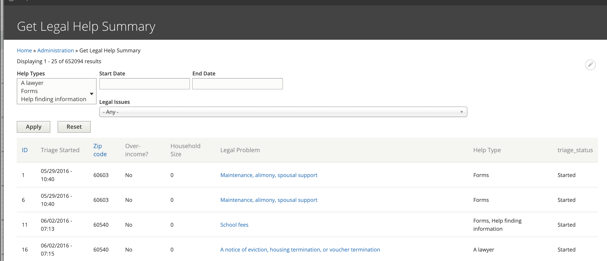

Get Legal Help Summary Report¶
The Get Legal Help summary report provides an overview of Get Legal Help usage.
Report Data¶
The report includes:
unique ID of the triage user. Every user who fills out the Get Legal Help page form is assigned a unique ID. if a user completes the form multiple times, each instance gets a new ID.
The date/time the triage was started.
The provided zip code
Whether the user answered Yes or No to the income question. This question is only captured when they are seeking a lawyer.
Their household size. This is only captured when they are seeking a lawyer.
Help type the user is seeking: information, forms, and/or lawyers
Triage status
Filters¶
Data can be directly filtered by:
One or more help types
Start and end dates of when the triage form was started
Legal issues.
Additional filtering may be done by exporting to CSV and working with the data directly.
Todo
A review of the legal issues filter needs to be done to ensure that it is returning nested results even when the value is set further into triage.
Triage statuses¶
Modal: User was shown the modal but closed it
Modal - intake available: User entered zip in modal & shown intake was available but did not proceed
Modal - intake not available: User was shown the modal, entered zip but intake was not available
Started: User submitted the main form & stopped
Legal issue and top of triage tree: User accessed 1 of 2 pages to determine what their legal issue is and stopped
Out of area: User entered a non-IL address
Program triage: Users started program triage rules.
Referrals: Users were given legal aid referrals, and never got to online intake.
Over-income Referrals: Users were given over-income referrals, and never got to online intake.
Program triage completed: User completed program triage
Note
Modal-related statuses were deprecated June 24, 2020 with the launch of our Drupal 8 website.
Intake statuses¶
Diverted: Users who diverted from intake because their legal issue does not match an organization’s case acceptance criteria
Referrals: Users who complete the program’s triage but indicate that they do not have a safe phone number
Started: Users who were matched to an organization, started the intake process, but did not finish it (excluding users who were just determined eligible)
Incomplete:
Offered: Users who were matched to an organization, but did not start the intake
Over-income: Users who completed the income questions during intake, but were not eligible
Over-asset: Uses who completed the asset questions during intake, but were not eligible
Eligible: Users who completed the income questions during intake and were eligible, but did not continue
Bypass: SMS users who completed program triage and are instructed to contact the organization rather than completing an intake
Bypass Intake: Users who complted program triage and are instructed to contact the organization rather than completing an intake
eTransferred: Users who were matched to an organization and completed the intake process
Not_eTransferred: Users who were matched to an organization and completed the intake process, but there was an error when eTransferring
Note
As of January 1, 2020, users are no longer being asked about their assets